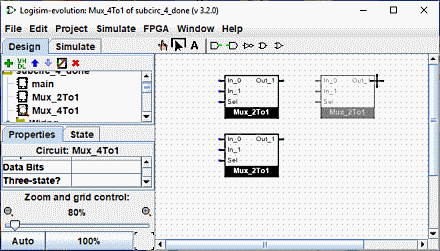
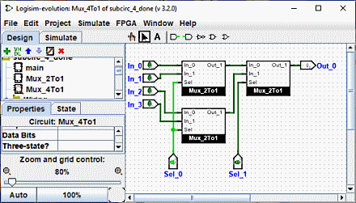
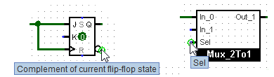

使用子电路
现在假设我们要使用 2 选 1 多路选择器的实例构建一个 4 选 1 多路选择器。当然，我们首先会创建一个新电路，将其命名为 Mux_4to1。要向电路中添加 2 选 1 多路选择器，我们在资源管理器窗格中 单击 Mux_2to1 电路以将其选为工具，然后通过单击画布来添加其副本，这些副本显示为方框。

如果您在资源管理器窗格中双击 Mux_2to1 电路，窗口将切换到编辑 Mux_2to1 电路。
构建电路后，我们得到如下结果。

我们的 4 选 1 多路选择器电路使用了三个 2 选 1 多路选择器副本，每个都绘制在一个带有左右两侧引脚的方框中。此方框上的引脚对应于 Mux_2to1 电路中的输入和输出引脚。方框东侧的两个引脚对应于电路的输入，西侧的引脚对应于输出。它们从子电路图中按从右到左、从上到下的顺序读取，并将按从上到下的顺序放置在子电路符号上。
如果图中已经为这些引脚设置了标签，标签也会包含在子电路符号中。此外，当您将鼠标悬停在引脚上时，这些标签也会作为 工具提示 显示。您可以通过 首选项面板 禁用此功能。

其他一些组件也会显示这些提示：例如，对于内置 触发器 的某些引脚，将鼠标悬停在其上会解释该引脚的功能。
顺便提一下，电路中的每个引脚必须明确是输入或输出。许多实际芯片的引脚会在某些情况下作为输入，在另一些情况下作为输出；但在 Logisim 中不能构建这种具有双向引脚的芯片（至少当前版本不能）。
Logisim 将为电路中出现的所有子电路维护不同的状态信息。例如，如果一个电路包含一个触发器，并且该电路多次被用作子电路，那么在仿真更大电路时，每个子电路的触发器将拥有自己的值。
现在我们已经定义了 4 选 1 多路选择器，可以在其他电路中使用它。Logisim 对电路嵌套深度没有限制——但它会拒绝把电路嵌套到自身内部！
注意： 编辑正在用作子电路的电路没有任何问题；实际上，这很常见。但请注意，对电路引脚的任何更改（添加、删除或移动）都会重新排列包含该子电路的电路中的对应引脚。因此，如果您更改了电路中的任何引脚，还需要编辑所有将其用作子电路的电路。
下一节： 编辑子电路外观。